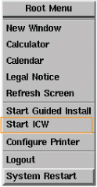
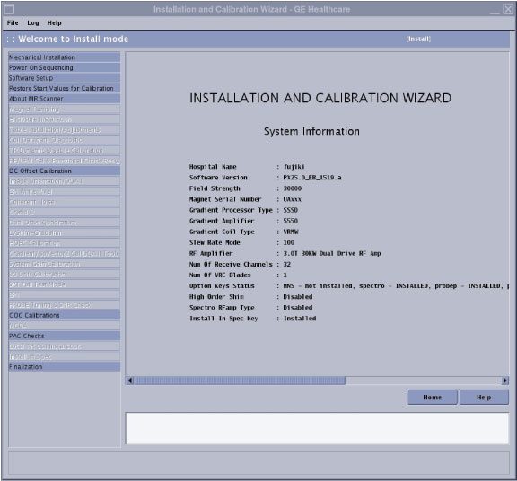

Make sure all customer-purchased options are installed before running ICW. Any options added after running ICW will not be shown.
A service key is required to launch the Installation and Calibration Wizard.
Safety
Before working in any GE HealthCare MR suite or doing any GE HealthCare service procedure, you must:
Have read and understood all hazard conditions and safety requirements in the latest revision of the GE HealthCare MR Service Safety Manual (5452735).
Have successfully completed all relevant GE HealthCare Environmental Health and Safety (EHS) courses (or for non-GE employees, equivalent workplace training courses).
Comply with all site-specific training and workplace safety requirements.
If you have any safety concerns at any time, do not begin work or immediately stop work and move to a safe location. Immediately contact your supervisor or site safety officer for instructions on how to proceed.
About this task
ICW Installation mode is run in Root mode.
ICW installation mode is used for new installations and upgrades.
Figure 1. ICW Install mode screen
The left pane lists all tasks required to complete the installation.
Tasks must generally be completed in order, from top to bottom (tasks with prerequisites are grayed out until all prerequisites are completed). Non-grayed out tasks may be completed in any order or in parallel.
After a task is completed, click Check Status in the right pane. Completed tasks turn blue; failed tasks turn red.
ICW remains in installation mode until all tasks are successfully completed.
Note:
When running ICW, the calibration tools are launched and finalized from within the ICW interface. Figure 2. ICW calibration tool interface
When running these tools within ICW, some of the finalization tasks such as Doing a TPS reset or Saving information will be automatically completed by ICW.
Procedure
Before opening ICW for the first time, make sure all options purchased by the customer are installed.
Note:
The option key check is only done the first time the tool is used. Any change to the option key status after ICW has started will not be shown.
From the Common Service Desktop select Calibrations > Installation and Calibration Wizard.
Use the following tables as a reference to identify what tasks are needed to complete each procedure within ICW.
Note:
Relaunching a completed task in ICW displays a dialog showing prerequisite tasks. You may want to rerun the prerequisites listed before rerunning the selected task.
When you power up the host computer and see the login screen, click root login.
Log in with the user name: root and password.
Note: It is possible that the customer changed the default password. If you cannot log in, contact the customer for the correct password.
Logging in as the root user automatically displays the Linux desktop and launches the Guided Install Starter window. Click No to ignore the Guided Install.
Confirm that the service key is installed.
Right-click on the Linux desktop to access the Root Menu and then select Start ICW.

ICW screen shows:

Mechanical Installation
Power on sequencing
Answer the following questions:
Have you filled chiller and lines with coolant?
Is Magnet Monitor power connected to customer source?
Have you completed system power on sequentially?
Are the coolant leak checks done?
Software setup
Answer the following questions:
Does the system have the latest service pack software loaded as per the MR Service Pack Software Matrix (DOC1667089? (Installing service packs)
Make sure the system parameters (hardware and software) are correct by viewing the About box. It is available from the Tools pull-down menu by selecting About MR Scanner.
Has the GOC come with software pre-loaded? (Yes/No)
Note: Make sure the system parameters and hardware configuration are correct for your system, and edit accordingly in Guided Install (see System and hardware configuration).
1 person
5 minutes
Enclosure removal for shimming
Note:This procedure is typically completed during installation.
2 people
60 minutes
Mapping fixture setup
Note:This procedure is typically completed during installation.